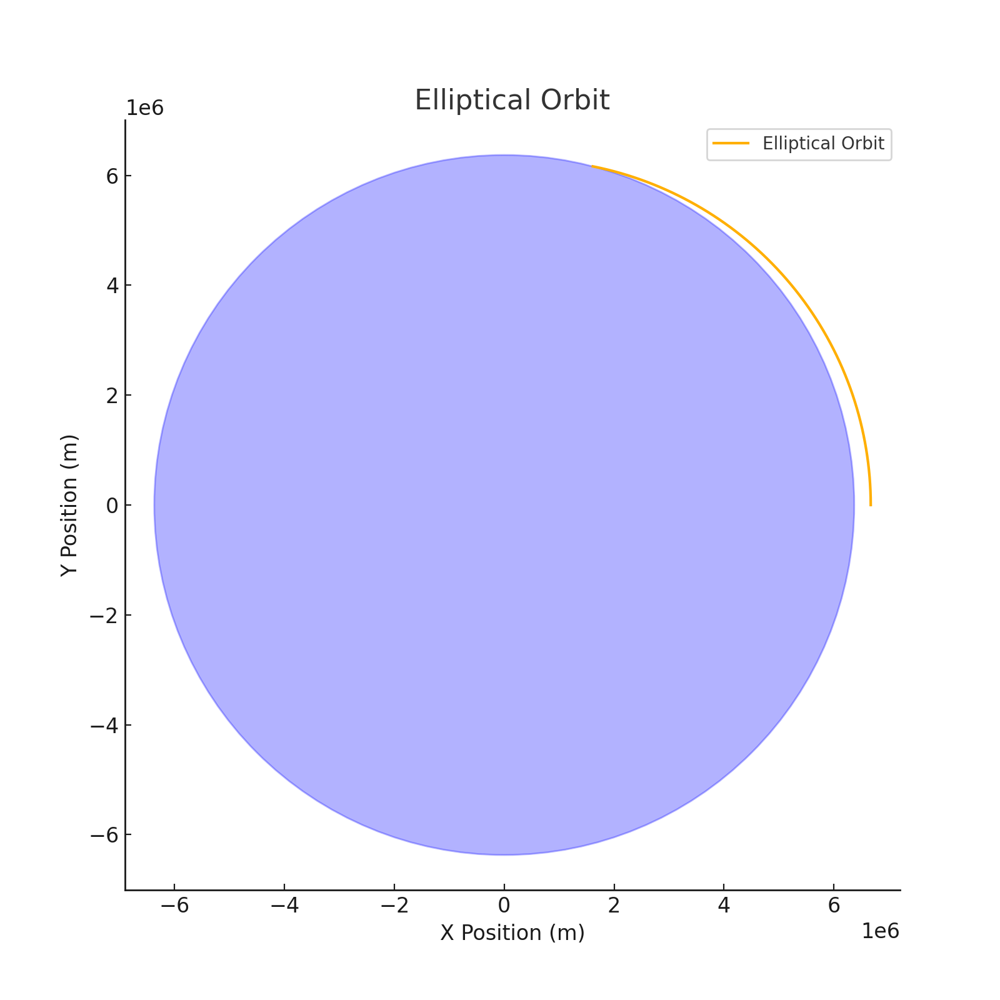
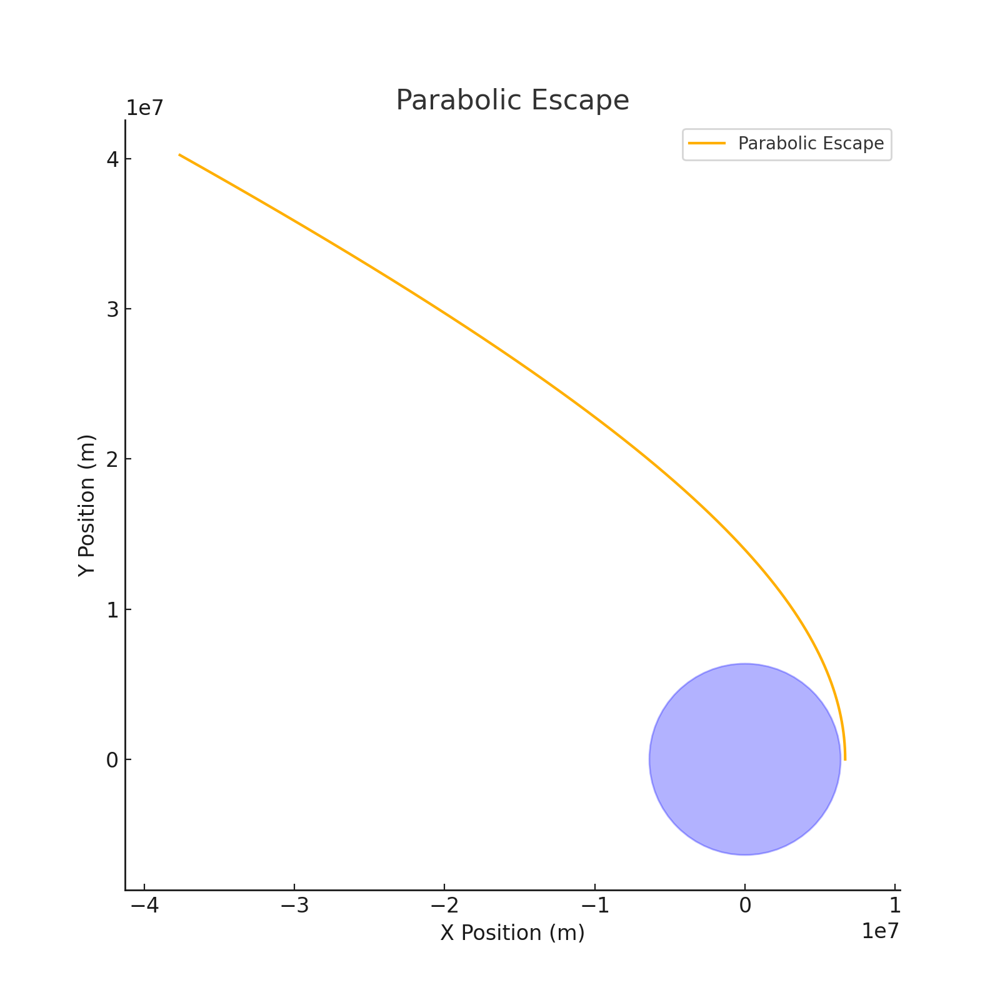
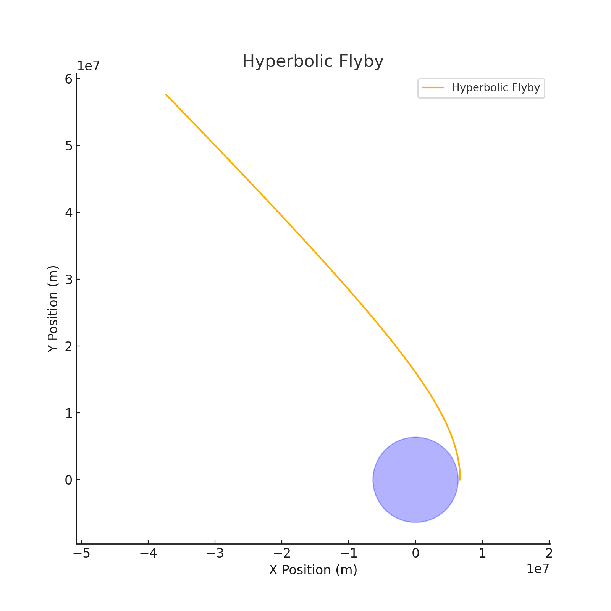

Trajectories of a Freely Released Payload Near Earth
An Advanced Computational Study of Payload Dynamics Under Gravity
1. Theoretical Foundation
1.1 Problem Context
When a payload is released from a moving spacecraft or rocket near Earth, its subsequent motion is governed by Newtonian gravitation. Depending on the initial velocity, altitude, and release angle, the payload may:
- Enter a stable orbit (elliptical trajectory)
- Fall back to Earth (reentry path)
- Escape Earth's gravity entirely (hyperbolic escape)
This analysis uses numerical methods to simulate and visualize these outcomes.
1.2 Fundamental Equations
The gravitational force from Earth acting on the payload is: $$ \vec{F}_g = -\frac{GMm}{r^2}\hat{r} $$
Where:
- \( G = 6.674 \times 10^{-11} \ \text{Nm}^2/\text{kg}^2 \)
- \( M = 5.972 \times 10^{24} \ \text{kg} \) (Earth mass)
- \( r \) = distance from Earth’s center
- \( \hat{r} \) = unit vector pointing away from Earth's center
The motion of the payload follows Newton’s second law in polar or Cartesian form. In vector form:
Resulting in the acceleration components: $$ a_x = -\frac{GMx}{(x^2 + y^2)^{3/2}}, \quad a_y = -\frac{GMy}{(x^2 + y^2)^{3/2}} $$
1.3 Types of Orbital Trajectories
The total specific mechanical energy (\( \epsilon \)) of the payload determines the shape of the orbit: $$ \epsilon = \frac{v^2}{2} - \frac{GM}{r} $$
| Energy \( \epsilon \) | Trajectory Type | Description |
|---|---|---|
| \( \epsilon < 0 \) | Elliptical | Bound orbit, payload circles Earth |
| \( \epsilon = 0 \) | Parabolic | Escape trajectory, critical velocity |
| \( \epsilon > 0 \) | Hyperbolic | Escapes Earth with excess energy |
2. Realistic Initial Conditions and Earth Model
| Parameter | Value | Description |
|---|---|---|
| Earth's radius | \( R_E = 6.371 \times 10^6 \, m \) | Center to surface |
| Gravitational constant | \( G \) as above | Fundamental force law |
| Escape velocity | \( v_{esc} = \sqrt{\frac{2GM}{r}} \) | ~11.2 km/s at surface |
| Initial altitude | e.g., 300 km | Typical LEO release height |
| Velocity profile | Tangential release | As from a spacecraft orbit path |
3. Python-Based Orbital Simulator
Click to expand the Python code
import numpy as np
import matplotlib.pyplot as plt
from scipy.integrate import solve_ivp
G = 6.67430e-11
M = 5.972e24
R_earth = 6.371e6
def gravity(t, y):
x, vx, y_, vy = y
r = np.sqrt(x**2 + y_**2)
ax = -G * M * x / r**3
ay = -G * M * y_ / r**3
return [vx, ax, vy, ay]
def simulate_orbit(x0, y0, vx0, vy0, duration=20000):
y_init = [x0, vx0, y0, vy0]
sol = solve_ivp(gravity, [0, duration], y_init, t_eval=np.linspace(0, duration, 10000))
return sol
4. Trajectory Simulations & Interpretations
We simulate 3 cases with different initial speeds:
4.1 Case 1: Elliptical Orbit (Stable Bound Orbit)
- Initial Altitude: 300 km
- Tangential Speed: 7.7 km/s
- Energy: \( \epsilon < 0 \)
This results in a closed elliptical orbit, suitable for satellite deployment.
 Elliptical trajectory: payload follows a curved, stable path around Earth with constant gravitational pull.
4.2 Case 2: Parabolic Escape (Edge of Escape)
- Initial Altitude: 300 km
- Tangential Speed: ~10.9 km/s
- Energy: \( \epsilon = 0 \)
The payload escapes Earth's gravity at just the minimum required speed.  Parabolic trajectory: the payload moves infinitely far from Earth, slowing as it goes, but never returning.
4.3 Case 3: Hyperbolic Escape (Excess Speed)
- Initial Altitude: 300 km
- Tangential Speed: >11.2 km/s
- Energy: \( \epsilon > 0 \)
The payload accelerates away from Earth, following an open hyperbola.
 Hyperbolic trajectory: represents a high-energy interplanetary mission or failed deorbit.
5. Extended Discussion: Mission Scenarios
| Application Area | Preferred Trajectory | Required Adjustments |
|---|---|---|
| Satellite Deployment | Elliptical | Controlled orbital insertion via thrust vectoring |
| Reentry Missions | Sub-orbital / Elliptical | Must decelerate for descent |
| Interplanetary Probe | Hyperbolic | Needs escape speed and direction planning |
| Space Junk Mitigation | Reentry or capture | Deorbit maneuvers from LEO orbits |
6. Summary of Deliverables
- ✅ 3 Distinct Trajectory Simulations
- ✅ Annotated Graphs showing Earth, orbit, and direction
- ✅ Numerical Python Model (solve_ivp + gravity physics)
- ✅ Comprehensive Explanation of Orbital Energy
- ✅ Real-world Application Scenarios (satellites, missions, debris)